Наука · журнал «ДентАрт» 2015 №2
Недосконалий амелогенез
AMELOGENESIS IMPERFECTA
Недосконалий амелогенез проявляється не лише як ізольована вада розвитку, а й у поєднанні з іншими симптомами та синдромами, наприклад трихо-денто-кістковим синдромом, який характеризується кучерявим різко знебарвленим волоссям, потовщенням кісток черепа та відсутністю пневматизації соскоподібних відростків. Зуби в повному комплекті, характеризуються витонченим шаром емалі або крапчастою зернистою твердою емаллю, збільшеними пульпарними камерами і тавродонтизмом. Зуби з дисплазією, жовто-коричневі, з практично невидимою емаллю. Більше того, пацієнти в перші роки життя страждають на світлобоязнь, горизонтальний ністагм і зниження центрального зору, зумовлене дистрофією жовтої плями сітківки. Описані аутосомно-домінантний, рецесивний, а також гоносомально-домінантний типи успадкування. Як було представлено в першому визначенні, можна зустріти також спорадичні випадки недосконалого амелогенезу. Це можуть бути як недосліджені аутосомно-рецесивні спадкові амелогенези, так і нові мутації або ж різні прояви домінантного гена.
При диференціальній діагностиці необхідно звернути увагу не лише на інші генетично зумовлені захворювання (недосконалий дентиногенез), а й на генералізовані дефекти зубів, спричинені зовнішніми впливами, такі як флюороз зубів, тетрациклінові зуби, синдром гіпомінералізації молярів і різців, порушення кальцієво-фосфорного обміну.
Класифікація
Недосконалий амелогенез — клінічно і генетично різнорідна група, тому класифікувати його непросто.
У минулому було багато різних пропозицій щодо класифікації цього захворювання. Перша класифікація, заснована лише на фенотипі, була опублікована 1945 року (Вейнам/Weinnam та співавт.) і розрізняла 2 типи цього захворювання: гіпопластичний і гіпокальцифікований недосконалий амелогенез. Одинадцять років по тому, 1956 року, Дарлінг/Darling виділив 5 груп, заснованих на клінічному, радіографічному та гістопатологічному дослідженні. Наступного року запропонували іншу класифікацію, що враховує фенотип, із 5 груп (Віткоп/Witkop, 1957). 1970 року Шульц/Schulze виділив різні типи спадкового амелогенезу з урахуванням фенотипу і типу успадкування, пізніше було представлено подібну класифікацію Віткоп/Witkop і Рао/Rao (1971), а також Віткоп/Witkop і Саук/Sauk 1976 року. Вінтер/Winter і Брук/Brook 1975 року представили 4 головні типи, засновані первинно на фенотипі й типі успадкування. Через 10 років Санделл/Sundell і Кох/Koch запропонували поділ лише за фенотипом (1985). Найбільш містку класифікацію запропонував Віткоп/Witkop 1988 року, розділивши захворювання на 4 головні категорії первинно за фенотипом і вторинно за типом успадкування. 1995 року Олдред/Aldred і Кроуфорд/Crawford представили нову класифікацію, засновану на виявленні дефекту, результатах біохімічного аналізу, типі успадкування і фенотипі. 2002 року Харт/Hart запропонував субкласифікації молекулярних дефектів гена AMELX, а роком пізніше Олдред/Aldred та співавтори представили поки що останню класифікацію, засновану на типі успадкування, фенотипі (клінічному та радіографічному), молекулярному дефекті та біохімічному аналізі.
Більшість авторів спеціальної літератури, передусім заради наочності, схиляються до клінічної класифікації і виділяють 3 типи недосконалого амелогенезу: вроджена гіпоплазія, пов'язана з порушенням формування матриксу; вроджена гіпоплазія, пов'язана з порушенням дозрівання емалі; вроджена гіпоплазія, пов'язана з гіпокальцифікацією емалі. Інтенсивне дослідження і бажання зрозуміти генетичний фундамент недосконалого амелогенезу неминуче приведе до появи в майбутньому нових, найімовірніше, генетично обґрунтованих класифікацій. Серед чеських авторів спадковими аномаліями зубощелепної системи займається докторка Швабова/Svabova.
Клінічні форми
Дефект формування емалі може виникнути в будь-якій фазі, і саме залежно від часу впливу на розвиток цієї тканини можна виділити 3 головні клінічні підтипи.
У секреторній фазі амелогенезу може виникати порушення функції амелобластів, коли ці клітини недостатньо ростуть, що призводить до патологічного витончення шару емалі. Більш тяжким випадком гіпопластичного недосконалого амелогенезу є агенезія емалі, коли емаль не виявляється ні клінічно, ні рентгенологічно.
Другим типом є порушення дозрівання емалі. Ця форма характеризується спотвореним ростом емалевих призм під час фази дозрівання, коли протеїни недостатньо видалені з матриці. Емалевий шар стає м'яким, жовтим і за рентгенощільністю наближається до дентину.
При гіпокальцифікованій формі проявляється серйозне порушення мінералізації. Хоча емаль буде нормальної товщини, дефекти в матриці мінералізації емалі призводять до того, що ця тканина шорстка, м'яка, і її можна легко видалити зондом, що спричиняє швидку абразію, стирання після прорізування зуба. У пацієнтів, які страждають на цю форму недосконалого амелогенезу, швидше утворюються тверді й м'які зубні відкладення, і пародонт перебуває в стані запалення.
Генетика
1991 року було описано першу генетичну мутацію в членів однієї шведської родини, яка сприяла розвитку недосконалого амелогенезу. Це був частковий поділ гена AMELX на Х-хромосомі. Зазвичай гетерозиготні жінки можуть передавати мутований ген нащадкам обох статей з ризиком 50%, у чоловіків констатується повна передача при успадкуванні. Зуби в таких випадках мають або дуже тонку емаль нормального кольору і прозорості, або, навпаки, емаль нормальної товщини, але слабко мінералізовану, через що вона втрачає свою прозорість, і в цьому разі може проявитися жовто-коричневе забарвлення зубів. Фенотип у жінок відрізняється, у них частіше спостерігаються вертикальні зміни в емалі, що чергуються з ділянками нормальної емалі. Ураження зубів несиметричне. Цьому сприяє процес так званої «леонізації», коли випадково одна з Х-хромосом інактивується.
Аутосомно-домінантний недосконалий амелогенез є формою цього захворювання, описаною найчастіше. Головну відповідальність за цей тип порушення несе ген ENAM (на 4-й хромосомі). Наступні гени, що впливають на розвиток захворювання, — DLX 3 (17-та хромосома), — пов'язані з гіпоплазією при порушенні матриксу і гіпоплазією при порушенні дозрівання емалі. Аутосомно-домінантний тип проявляється тавродонтизмом і відповідає за трихо-денто-кістковий синдром. Фенотипові прояви аутосомно-домінантного недосконалого амелогенезу — тонка емаль, треми і діастеми між зубами. У деяких родинах були виявлені зуби із зернистою, нерівномірною або безладно крапчастою емаллю. Така емаль може успадковуватися аутосомно-рецесивно в осіб балкано-кавказької та негроїдної раси. Порушення можуть проявлятися як у тимчасовому, так і в постійному прикусі. Часто описується температурна чутливість, відкритий прикус. Зуби жовто-коричневі, емаль має нормальну товщину. Клінічно цей тип може проявитися ураженням усіх зубів або локалізованими гіпокальцифікованими дефектами, переважно шийок зубів. Цей тип є найпоширенішим у Північній Америці, і генетичні зміни, що його провокують, відомі з 2007 року. Ген, відповідальний за мутацію, — FAM83H (на 8-й хромосомі), і на цей момент виявлено вже 16 мутацій цього гена.
Аутосомно-рецесивні форми недосконалого амелогенезу трапляються рідко, переважно в етнічних групах, у яких часто укладають шлюби в межах одного роду. Поширеність також вища в популяціях, де частіше виникає мутація гена, наприклад, у мешканців Полінезії. На сьогодні виявлено гени, які відіграють роль в етіології аутосомно-рецесивних порушень амелогенезу. Йдеться про гени ENAM (4-та хромосома), MMP 20 (11-та хромосома), KLK 4 (19-та хромосома) і WDR 72 (15-та хромосома). MMP 20 і KLK 4 визначають однаковий фенотип захворювання (аутосомно-рецесивний пігментований з порушенням дозрівання емалі), унаслідок чого вони активні в різних фазах розвитку емалі. Товщина емалі в межах норми, але вона патологічно м'яка, і на ній утворюються плями.
Клінічний приклад
До клініки м. Пльзень у квітні 2012 року звернулися батьки з двома доньками (2005 і 2007 р.н.) (фото 1-4), яких лікуючий стоматолог направила на консультацію. Стоматологічний анамнез батьків пацієнток не обтяжений, генеалогія генетично нічим не вирізнялася, проявів подібного захворювання не виявлено (фото 5), у місці проживання родини питна вода відповідає нормі, випарів радону в регіоні не зафіксовано. Крім доньок, є син, який на цей момент має інтактні зуби.
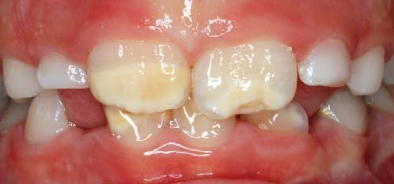
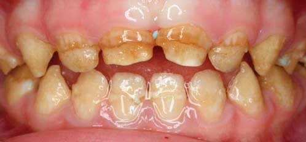
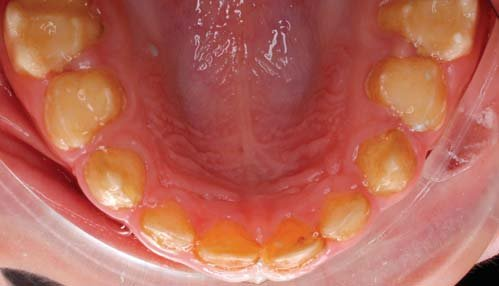
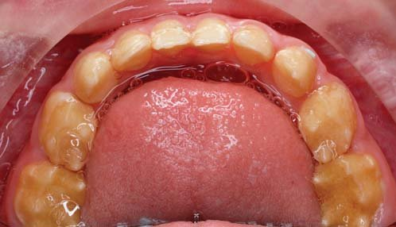
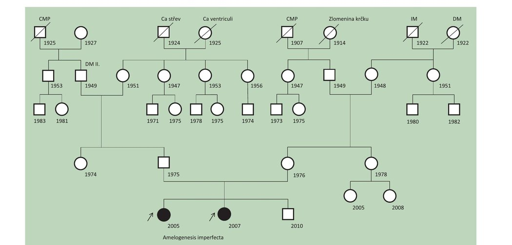
Фото 5. Генеалогічна схема родини.
Молодша з дівчаток здорова, алергічних реакцій не спостерігалося, антибіотики приймала одноразово у зв'язку з вірусною інфекцією. Психомоторний розвиток загалом без затримок.
На підставі клінічного, радіологічного та генетичного дослідження діагностовано аутосомно-рецесивний недосконалий амелогенез.
У пацієнтки відзначаються опакові жовті зуби, частково вкриті м'якою емаллю, уражені всі зуби тимчасового прикусу. Перші ознаки ураження емалі батьки помітили з 6-місячного віку дитини, коли почалося прорізування перших зубів, які були жовті, дрібні і м'які. При зміні прикусу було отримано випалий тимчасовий різець (фото 6), при скануванні зрізів якого в електронному мікроскопі виявлено крапчастість емалі, що підтверджує картину недосконалого амелогенезу (фото 7-8).
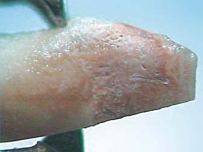
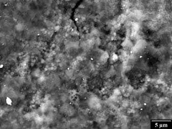
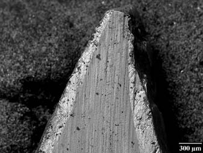
Емаль витончена, місцями відсутня, при великому збільшенні видно тріщини і лакуни, де емалева матриця зникає. Тканина неоднорідна, пориста, дентин не має ознак ураження.
Сестра, старша на 2 роки, не страждає на загальні захворювання, у минулому не мала серйозних захворювань, не приймала антибіотики, алергічних реакцій не спостерігалося. Психомоторний розвиток без відхилень. У цієї пацієнтки на підставі дослідження підтвердилася та сама форма амелогенезу, однак ураження твердих тканин було виражене менше. Клінічних відхилень у тимчасовому прикусі не спостерігалося. Після прорізування перших постійних молярів, центральних і латеральних різців на них відзначається жовтизна з білими смугами, зуби стерті. Пацієнтка скарг не пред'являє.
У старшої з двох дівчаток вирішено розпочати лікування з реставрації верхніх центральних різців (фото 9). Рентгенологічно ураження зубів карієсом не підтвердилося.
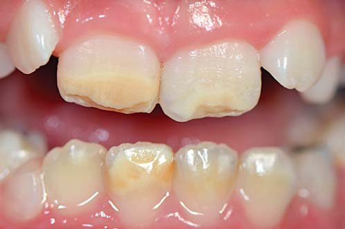
Прилад Діагнокам/Diagnocam (КаВо/KaVo) для візуалізації змін емалі підтвердив ураження як різців, так і перших постійних молярів (фото 10-12). В уражених зубах — наявність карієсу, зміна опаковості та консистенції емалі. Після клінічного аналізу дефектів проведено реставрацію центральних різців (фото 13-16).
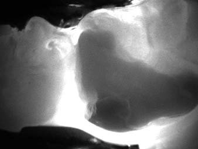
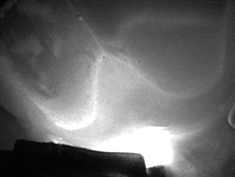
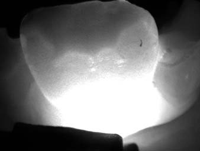
Після препарування ріжучих країв верхніх центральних різців нанесено 37% ортофосфорну кислоту, проведено праймування та адгезивну підготовку, дефект перекрито композитним матеріалом Джі-Еніал/G-Аenial (ДжиСі/GC) відтінку A2, проведено адаптацію в оклюзії, перевірку артикуляції та полірування.
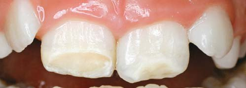
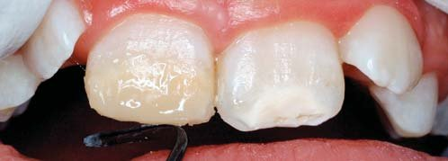
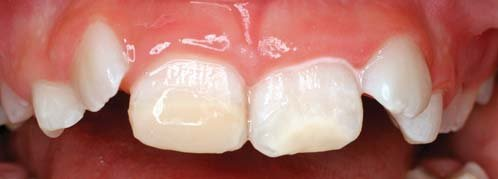
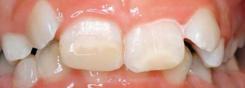
Далі буде продовжено терапію решти зубів для запобігання їх стиранню і, як наслідок, зниженню висоти прикусу, а також для профілактики карієсу зубів. Дівчаток направлено на ортодонтичне лікування, з батьками проведено роз'яснювальну бесіду про подальший хід лікування, включно з імовірним протезуванням у майбутньому.
Висновок
Пацієнти з вродженими дефектами емалі відчувають труднощі з підтриманням гігієни порожнини рота. Неестетичний вигляд зубів веде до труднощів соціалізації в колективі та до низької самооцінки. Зниження якості життя у зв'язку з психологічними проблемами відзначає більшість таких пацієнтів.
Література
- Urzua B., Ortega-Pinto A., Morales-Bozo I., Rojas-Alcayaga G., Cifuentes V.: Defining a New Candidate Gene for Amelogenesis Imperfecta: From Molecular Genetics to Biochemistry, Biochem Genet 2011; 49; 104-121.
- Chaudhary M., Dixit S., Singh A., Kunte S.: Amelogenesis imperfecta: Report of a case and review of literature, J Oral Maxillofac Pathol 2009 Jul-Dec; 13; 2; 70-77.
- Crawford R. J. M., Aldred M., Bloch-Zupan A.: Amelogenesis imperfecta, Orphanet Journal of Rare Diseases 2007; 2: 7.
- Svabova M., Racek J., Markova M.: Genetika ve stomatologii: prehiedove sdeleni, LKS, 2012, 22 (12): 256-262.
- Wright J.T., Torain M., Long K., Seow K., Crawford R., Aldred M. J., Hart R.S., Haiti C.: Amelogenesis Imperfecta: Genotype-Phenotype Studies in 71 Families, Cells Tissues Organs 2011; 194; 279-283.
- Bailleul-Forestier I., Berdal A., Vinckier F., de Ravel I., Fryns J. R., Verloes A.: The genetic basis of inherited anomalies of the teeth. Part 2: Syndromes with significant dental involvement, European Journal of Medical Genetics 2008; 51; 383-408.
- Pemberton T.J., Mendoza G., Gee J., Patel Rl.: Inherited Dental Anomalies: A Review and Prospects for the Future Role of Clinicians, CDA Journal 2007; vol. 35, no. 5.
- Lagerstrom M., Dahl N. et al.: A deletion in the amelogenin gene (AMG) causes X-linked amelogenesis imperfecta (AIH1), Genomics 1991; 10; 4; 971-975.
- Hu J. C.C., Chun Y.H. R, Al Hazzazzi I, Simmer J. R: Enamel Formation and Amelogenesis Imperfecta, Cell Tissues Organs 2007; 186; 78-85.
- Coffied K.D., Phillips C, Brady M., Roberts M. W., Strauss R. R, Wright J. I: The Psychosocial impact of developmental dental defects in people with hereditary amelogenesis imperfecta, J Am Dent Assoc 2005; 136; 620-630.
- Kurisu K., Tabata M. J.: Human genes for dental anomalies. Oral Diseases 1997; 3; 223-228.